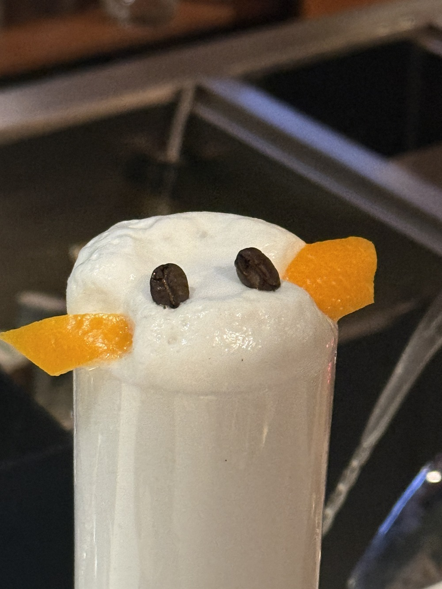
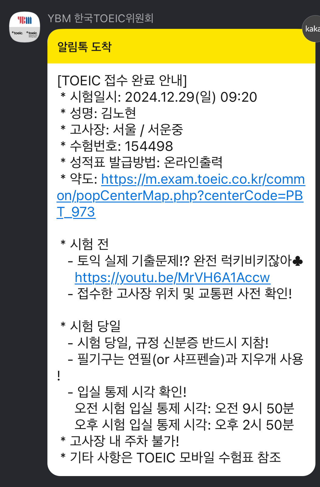
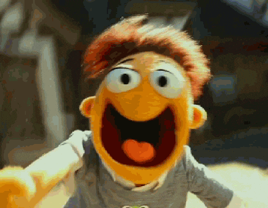

🎢 술 먹기 전 - 불안한 서막
친구가 퇴사를 했다. 친구는 마침내 자유를 얻었고, 우리는 그걸 축하하기 위해 논현동의 한 술집에서 만났다.
"야, 내일 토익이라 너무 늦게까지는 안 마시는 게 좋지 않냐?"
"아, 그래도 축하는 해야지. 딱 한 잔만 하고 가자!"
"그래, 맥주 한 잔만."
우리는 그렇게 "한 잔만" 하기로 했다.
이 대화가 그날의 비극의 예고였다.
처음에는 하이볼 한 잔으로 시작했다. 하지만 “한 잔만 더”라는 말이 계속 이어졌고, 우리는 어느순간 소주를 마시고 있었으며, 다시 정신을 차려보니 테킬라까지 비워버린 우리였다.
"야, 나 이제 못 마시겠다."
"아니야, 마지막으로 한 잔만 더!"
그렇게 마지막을 몇 번이나 반복한 끝에, 우리는 집으로 향했다. 정확히 몇 시였는지는 모른다. 대충 지하철이 끊긴 시간이였다는 것만 기억난다.

나는 친구와 비틀거리며 집으로 걸어왔다. 가끔은 겨울의 찬 바람이 정신을 깨워줄 때도 있었지만,
이 날은 아니었다.
다음날 아침 - 다가오는 위기
그러고 다음날 아침
"아 X됐다.”
알람 소리에 일어난 나의 머리는 깨질 듯이 아팠고, 속은 세탁기처럼 요동쳤다. 침대에서 일어나려고 했지만 몸이 중력 10배 이벤트 상태였다. 머리 속으로는 어젯밤의 술자리가 스쳐 지나갔다. 그러고 동시에 떠오른 한 가지 사실.
‘오늘 아침 9시, 토익 시험.’
오늘 아침 9시, 친구들과 접수한 토익 시험이 있었다. 순간 머릿속이 새하얘졌다. 지금 이 상태로 시험을 본다고? 애초에 시험장까지 갈 수 있을지도 의문이였다. 누운 채로 고민했다. ‘그냥 포기할까…? 어차피 토플점수가 있어서 필요도 없는데…’ 하지만 바로 그때, 한가지 중요한 사실이 떠올랐다.
응시료 57,500원
이걸 그냥 날린다고? 절대로 아니지. 인간은 돈이 걸리면 강해진다. 나는 비틀거리며 일어나 대충 씻고 준비를 해서 중력 10배 이벤트를 받은은 몸을 끌고 집을 나섰다.
시험장까지 가는 길은 정말로 힘들었다.
택시를 탔지만, 차가 흔들릴 때마다 속이 미친 듯이 요동쳤다.
내려서 시험장까지 걸어가는 동안에도 ‘이 상태로 시험을 볼 수 있을까? 라는 의문이 계속 들었다.
하지만 도착했다… 이제 나에게 남은 건 시험뿐이었다.
여기까지와서 포기할 수는 없었다.
시험시작 - 파멸 너머의 각성
LC(듣기 평가)가 시작되자. 원어민의 목소리가 귀에 들렸다. 그런데… 어라? 생각보다 괜찮은데..?
Part 1 – 흐름을 들어보니 대충 답이 감. 컨디션은 바닥인데, 집중력은 이상하게 또렷했다.
Part 2 – 원래도 그냥 풀었는데, 오늘은 더 감이 잘 온다?
Part 3 – 의외로 집중이 잘된다. 술기운 덕인지 오히려 쓸데없는 긴장이 사라진 느낌.
RC(독해)는 집중력과 졸음이슈로 불안했지만, 막상 문제를 풀다 보니 술기운이 싹 빠지는 느낌이었다. 어들이 또렷하게 보였고, 평소와 다르지 않게 아니 오히려 잘 읽혔다. ‘이거 뭐지? 혹시 술이 각성제 역할을 하나?’라는 생각이 들 정도였다. 시간이 지날수록 몸 상태도 안정되었다. 숙취는 여전했지만, 신기하게도 문제 푸는 데는 거의 영향을 주지 않았다. 마지막 100문제쯤 갔을 때는 오히려 평소보다 더 가벼운 마음으로 풀었다. 시험이 끝나고 밖으로 나왔을 때, 속이 다시 울렁거리긴 했지만..
같이 술을 먹고 봤던 우리 모두에게는
“어? 생각보다 괜찮았는데?”
라는 감상이 남았다
시험 끝 - 끝인가?
시험이 끝나고 밖으로 나왔을 때,속은 다시 울렁거렸지만 마음은 묘하게 평온했다.
“야, 너 괜찮았냐?”
“야… 우리 진짜 이 상태로 토익 본 거 맞냐?”
“말도 안 되게 집중 잘 됐는데?”
그리고 결과는?
기적적으로 970을 넘겼다
나는 그제야 깨달았다.인간은 생각보다 강하다.
그리고, 숙취 상태가 꼭 나쁜 것만은 아닐 수도 있다. 물론 시험전날 술을 먹는거를 추천하지는 않는다…